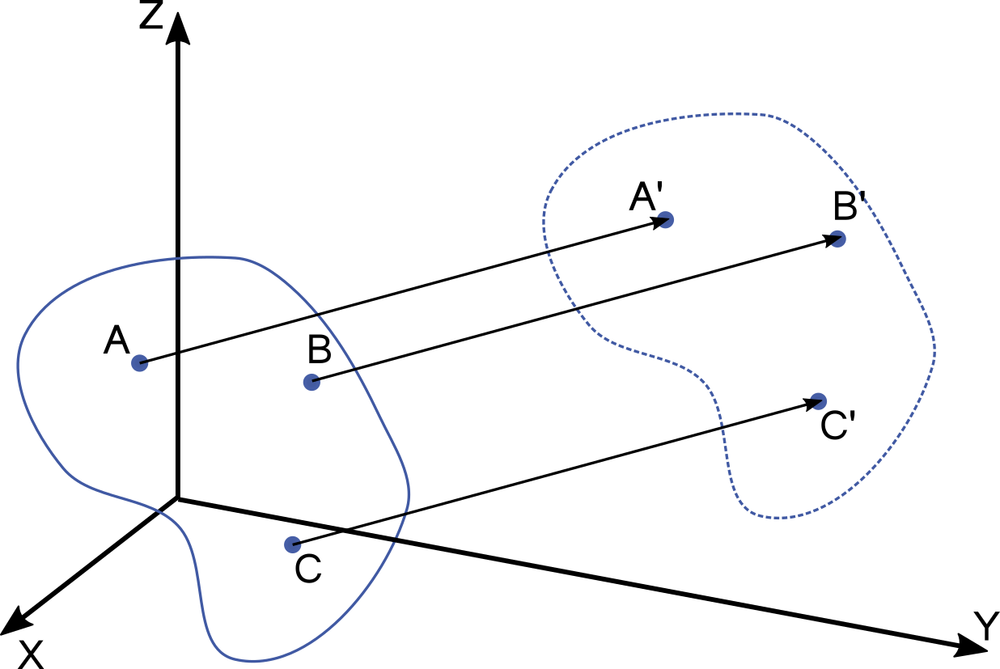
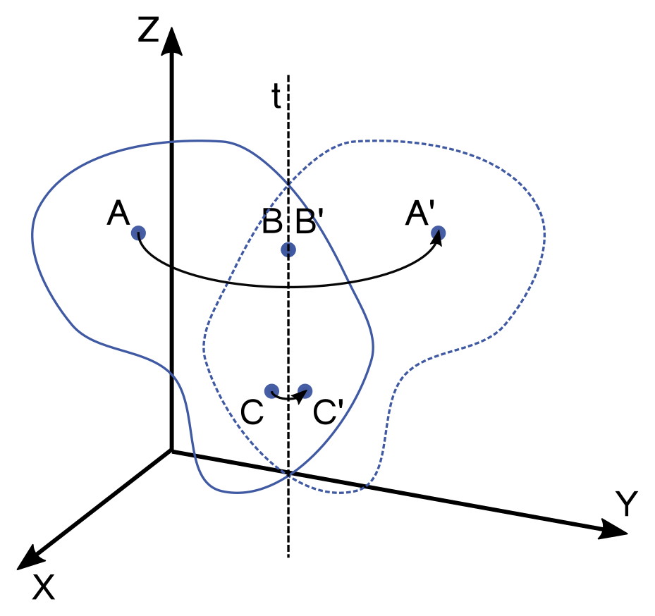

04. Robotikai alapfogalmak, da Vinci sebészrobot programozása szimulált környezetben
Warning
ZH1 (ROS alapok, publisher, subscriber. Python alapok. Robotikai alapfogalmak.) október 18. 12:35, BA.1.10
Elmélet
Merev test mozgása

Def. Merev test
Merevnek tekinthető az a test, mely pontjainak távolsága mozgás során nem változik, vagyis bármely két pontjának távolsága időben állandó.
- Merev test alakja, térfogata szintén állandó.
- Merev test térbeli helyzete megadható bármely 3 nem egy egyenesbe eső pontjának helyzetével.

-
A test helyzetét szemléletesebben megadhatjuk egy tetszőleges pontjának 3 koordinátájával (pozíció) és a test orientációjával.
-
Merev testek mozgásai két elemi mozgásfajtából tevődnek össze: haladó mozgás (transzláció) és tengely körüli forgás (rotáció)
-
Transzlációs mozgás során a test minden pontja egymással párhuzamos, egybevágó pályát ír le, a test orientációja pedig nem változik.

-
Rotáció során a forgástengelyen lévő pontok pozíciója nem változik, a test többi pontja pedig a forgástengelyre merőleges síkokban körpályán mozog.
-
A merev test szabad mozgása is leírható mint egyidejűleg egy bizonyos tengely körüli forgás és egy haladó mozgás.
3D transzformációk
- Pozíció: 3 elemű offszet vektor

-
Orientáció: 3 x 3 rotációs matrix
- további orientáció reprezentációk: Euler-szögek, RPY, angle axis, quaternion
-
Helyzet (pose): 4 × 4 transzformációs mártrix
- Koordináta rendszer (frame): null pont, 3 tengely, 3 bázis vektor, jobbkéz-szabály
- Homogén transzformációk: rotáció és transzláció együtt
- pl. \(\mathbf{R}\) rotáció és \(\mathbf{v}\) transzláció esetén:
- Homogén koordináták:
- Vektor: 0-val egészítjük ki, \(\mathbf{a_H}=\left[\matrix{\mathbf{a} \\ 0}\right]=\left[\matrix{a_x \\ a_y \\ a_z \\ 0}\right]\)
- Pont: 1-gyel egészítjük ki, \(\mathbf{p_H}=\left[\matrix{\mathbf{p} \\ 1}\right]=\left[\matrix{p_x \\ p_y \\ p_z \\ 1}\right]\)
- Transzformációk alkalmazása egyszerűbb:
- Szabadsági fok (DoF): egymástól független mennyiségek száma.
Robotikai alapok

- Robotok felépítése: szegmensek (segment, link) és csuklók (joints)
- Munkatér (task space, cartesian space):
- Háromdimenziós tér, ahol a feladat, trajektóriák, akadályok, stb. definiálásra kerülnek.
- TCP (Tool Center Point): az end effektorhoz rögzített koordináta rendszer (frame)
- Base/world frame
- Csuklótér (joint space):
- A robot csuklóihoz rendelt mennyiségek, melyeket a robot alacsony szintű irányító rendszere értelmezni képes.
- csukló koordináták, sebességek, gyorsulások, nyomatékok...
Python libraries
Numpy
- Python library
- High dimension arrays and matrices
- Mathematical functions
import numpy as np
# Creating ndarrays
a = np.zeros(3)
a.shape
a.shape=(3,1)
a = np.ones(5)
a = np.empty(10)
l = np.linspace(5, 10, 6)
r = np.array([1,2]) # ndarray from python list
r = np.array([[1,2],[3,4]])
type(r)
# Indexing
l[0]
l[0:2]
l[-1]
r[:,0]
# Operations on ndarrays
r_sin = np.sin(r)
np.max(r)
np.min(r)
np.sum(r)
np.mean(r)
np.std(r)
l < 7
l[l < 7]
np.where(l < 7)
p = np.linspace(1, 5, 6)
q = np.linspace(10, 14, 6)
s = p + q
s = p * q
s = p * 10
s = p + 10
s = p @ q # dot product
s = r.T
pip3 install numpy
Matplotlib
- Visualization in python
- Syntax similar to Matlab
import numpy as np
from matplotlib import pyplot as plt
X = np.linspace(-np.pi, np.pi, 24)
C, S = np.cos(X), np.sin(X)
plt.plot(X, C, label='y=cos(x)', marker='.')
plt.plot(X, S label='y=sin(x)', marker='.')
plt.xlabel('x')
plt.ylabel('y')
plt.legend()
plt.show()
If not installed:
pip3 install matplotlib
Gyakorlat
1: dVRK ROS 2 install
-
Telepítsük az alábbi dependency-ket:
sudo apt install python3-vcstool python3-colcon-common-extensions python3-pykdl libxml2-dev libraw1394-dev libncurses5-dev qtcreator swig sox espeak cmake-curses-gui cmake-qt-gui git subversion gfortran libcppunit-dev libqt5xmlpatterns5-dev libbluetooth-dev libhidapi-dev python3-pyudev gfortran-9 ros-humble-joint-state-publisher* ros-humble-xacro
-
Klónozzuk a dVRK-t (da Vinci Reserach Kit)
vcssegítségével egy új workspace-be, majd build-eljük:mkdir -p ~/dvrk2_ws/src cd ~/dvrk2_ws/src vcs import --recursive --input https://raw.githubusercontent.com/jhu-dvrk/dvrk-github-workflow/main/vcs/ros2-dvrk-2.2.1.vcs cd ~/dvrk2_ws colcon build --cmake-args -DCMAKE_BUILD_TYPE=Release source ~/dvrk2_ws/install/setup.bash
-
A
.bashrcfájl végére illesszük be az alábbi sort:source ~/dvrk2_ws/install/setup.bash
-
Indítsuk el a PSM1 (Patient Side Manipulator) RViz szimulációját. A dVRK konzolon ne felejtsünk el HOME-olni. Tanulmányozzuk a szimulátor működését a tanult parancsok (
ros2 topic list,ros2 topic echoros2 run rqt_gui rqt_gui, stb.) használatával.# dVRK main console ros2 run dvrk_robot dvrk_console_json -j ~/dvrk2_ws/install/sawIntuitiveResearchKitAll/share/sawIntuitiveResearchKit/share/console/console-PSM1_KIN_SIMULATED.json# ROS 2 joint and robot state publishers ros2 launch dvrk_model dvrk_state_publisher.launch.py arm:=PSM1# RViz ros2 run rviz2 rviz2 -d ~/dvrk2_ws/install/dvrk_model/share/dvrk_model/rviz/PSM1.rviz# rqt_gui ros2 run rqt_gui rqt_gui
2: PSM subscriber implementálása
-
Hozzunk létre új python forrásfájlt
psm_grasp.pynévvel a~/ros2_ws/src/ros2_course/ros2_coursemappában. Adjuk meg az új entry point-ot asetup.py-ban a megszokott módon.
-
Iratkozzunk fel a PSM TCP (Tool Center Point) pozícióját és a csipesz pofái által bezárt szögét publikáló topic-okra.
/PSM1/measured_cp /PSM1/jaw/measured_js
-
Build-eljünk és futtassuk a node-ot:
cd ~/ros2_ws colcon build --symlink-install ros2 run ros2_course psm_grasp
3. PSM TCP mozgatása lineáris trajektória mentén

-
A PSM a lenti topicok-ban várja a kívánt TCP pozíciót és a csipesz pofái által bezárt szöget. Hozzunk létre publishereket a
psm_grasp.pyfájlban ezekhez a topicokhoz./PSM1/servo_cp /PSM1/jaw/servo_jp
-
Írjunk függvényt, amely lineáris trajektória mentén a kívánt pozícióba mozgatja a TCP-t. Küldjük az csipeszt a (0.0, 0.05, -0.12) pozícióba, az orientációt hagyjuk változatlanul. 0.01s legyen a mintavételi idő. Matplotlib használatával plotoljuk a tervezett trajektória x, y és z komponensét idő függvényében.
def move_tcp_to(self, target, v, dt):
-
Írjunk függvényt, amellyel a csipeszt tudjuk nyitni-zárni, szintén lineáris trajektória használatával.
def move_jaw_to(self, target, omega, dt):Note
A használt szimulátor hajlamos rá, hogy bizonyos értékek "beragadjanak", ezért a program elején érdemes az alábbi sorok használatával resetelni a kart:
#Reset the arm psm.move_tcp_to([0.0, 0.0, -0.12], 0.01, 0.01) psm.move_jaw_to(0.0, 0.1, 0.01)
4. Dummy marker létrehozása
-
Definiáljunk egy új koordináta rendszert
cameranévvel, majd ellenőrizzük a koordináta rendszereket:ros2 run tf2_ros static_transform_publisher --frame-id world --child-frame-id camera --x 0 --y 0 --z 0 --qx 0 --qy 0 --qz 0 --qw 1 ros2 run tf2_tools view_frames
-
Hozzunk létre új python forrásfájlt
dummy_marker.pynévvel. Adjuk meg az entry point-ot asetup.py-ban a megszokott módon. Implementájunk python programot, amely markert publikál (0.00687728, 0.06412506, 0.27155235) pozícióvaldummy_target_markernevű topic-ban. Aframe_idaddattag értéke legyencamera. Másoljuk az alábbi kódot adummy_marker.pyfájlba:import rclpy from rclpy.node import Node from visualization_msgs.msg import Marker class DummyMarker(Node): def __init__(self, position): super().__init__('minimal_publisher') self.position = position self.publisher_ = self.create_publisher(Marker, 'dummy_target_marker', 10) timer_period = 0.1 # seconds self.timer = self.create_timer(timer_period, self.timer_callback) self.i = 0 i = 0 def timer_callback(self): marker = Marker() marker.header.frame_id = 'camera' marker.header.stamp = self.get_clock().now().to_msg() marker.ns = "dvrk_viz" marker.id = self.i marker.type = Marker.SPHERE marker.action = Marker.MODIFY marker.pose.position.x = self.position[0] marker.pose.position.y = self.position[1] marker.pose.position.z = self.position[2] marker.pose.orientation.x = 0.0 marker.pose.orientation.y = 0.0 marker.pose.orientation.z = 0.0 marker.pose.orientation.w = 1.0 marker.scale.x = 0.008 marker.scale.y = 0.008 marker.scale.z = 0.008 marker.color.a = 1.0 # Don't forget to set the alpha! marker.color.r = 0.0 marker.color.g = 1.0 marker.color.b = 0.0; self.publisher_.publish(marker) self.i += 1 def main(args=None): rclpy.init(args=args) marker_publisher = DummyMarker([0.00687728, 0.06412506, 0.27155235]) rclpy.spin(marker_publisher) # Destroy the node explicitly # (optional - otherwise it will be done automatically # when the garbage collector destroys the node object) marker_publisher.destroy_node() rclpy.shutdown() if __name__ == '__main__': main()
-
Futtassuk a node-ot és jelenítsük meg a markert RViz-ben.
-
Adjuk meg a
cameraés aPSM1_psm_base_linkkoordináta rendszerek közötti trenszformációt, majd ellenőrizzük újra a koordináta rendszereket:ros2 run tf2_ros static_transform_publisher --frame-id PSM1_psm_base_link --child-frame-id camera --x 0.18 --y 0.03 --z 0.01 --roll 2.70526034 --pitch -0.78539816 --yaw -2.53072742 ros2 run tf2_tools view_frames
5. Marker megfogása
-
Iratkozzunk fel a marker pozícióját küldő topic-ra a
psm_grasp.py-ban.
-
Módosítsuk a
psm_grasp.pyprogramot úgy, hogy a csipesszel fogjuk meg a generált markert. -
Számoljuk át a kapott marker pozíciókat a
camerakoordináta rendszerből aPSM1_psm_base_linkkoordináta rendszerbe, hogy helyes legyen a megfogás pozíciója. A koordináta rendszerek közötti transzformáció:\[ roll=155^{\circ}, pitch=-45^{\circ}, yaw=-145^{\circ}, \mathbf{t}_{base,cam} = \left[\matrix{0.18 \\ 0.03 \\ 0.01\\ }\right] \]t_base_cam = np.array([0.18, 0.03, 0.01]) R_base_cam = R.from_euler('xyz', [155.0, -45.0, -145.0], degrees=True).as_matrix()
-
Implementáljuk a számítást homogén koordináták segítségével is. Készítsünk homogén transzformációs mátrixot a megadott értékekből. Alkalmazzuk a transzformációt a
camerakoordináta rendszerben kapott pozícióra.
6. TCP mozgatása körív mentén
- Implementáljunk metódust, amely r sugrú körív mentén mozgatja a megfogót.